Parameter estimation and Bayesian Inference Fundamentals#
You may find it helpful to read Chapter 20 and Chapter 21 of the Data 140 textbook, which present a different exposition of similar material, but are not required prerequisites for this chapter.
We’ll begin our exploration of Bayesian and frequentist modeling with a simple example that highlights some key differences between the two approaches. Recall our setup: we observe some data \(x_1, \ldots, x_n\), and we’ll use them to estimate some parameter \(\theta\) of interest. In this and the following sections, we’ll focus on two simple examples to help us build intuition:
Estimating product quality: \(x_1, \ldots, x_n\) are the reviews (👍/1 or 👎/0) for a product being sold online, and \(\theta\) is a number between 0 and 1 that represents the probability of someone leaving a good review. Intuitively, \(\theta\) represents our estimate of the quality of the product.
Estimating average height: \(x_1, \ldots, x_n\) are the heights of \(n\) individuals in a random sample, and \(\theta\) is the average height of individuals in the population.
We’ll start with the first example.
Intuition and computation#
Suppose you’re shopping for a new microwave. You find two choices, both of which cost about the same amount:
Microwave A has three positive reviews and no negative reviews
Microwave B has 19 positive reviews and 1 negative review
Which one should you buy?
Intuitively, there isn’t necessarily a right or wrong answer. But, in a scenario like this, most shoppers would probably prefer microwave B. Seeing more data points, even if one is negative, reassures us that the results we’re seeing in the reviews are consistent.
We’ll approach this question computationally from a frequentist and then a Bayesian perspective, and see how well each one can incorporate the intuition above.
When formulating a statistical model (regardless of choosing a Bayesian or frequentist approach), it’s important to choose a model so that the parameter we’re estimating satisfies the following criteria:
The parameter should reflect the underlying quantity that we’re interested in estimating. In this case, we’ll quantify how “good” each microwave is using \(\theta\), and then we can just pick the microwave that’s “better” (i.e., has a higher value of \(\theta\)). Our choice above, the probability of leaving a positive review, satisfies this, since better products should be more likely to get positive reviews than worse products.
The parameter should fit clearly within our probability model: in other words, our probability model should relate the observed data and the parameter. We’ll see more about how this works shortly.
Our goal will be to estimate and draw conclusions about the parameter \(\theta\) based on the observed data \(x_1, \ldots, x_n\).
Frequentist parameter estimation: maximum likelihood#
Before we can actually do any parameter estimation, we need to first specify the relevant probability distributions. Recall that in the frequentist setting, we’re assuming that the data (our binary reviews, \(x_1, \ldots, x_n\)) are random, but that the parameter (the probability of generating a positive review \(\theta\)) is fixed and unknown.
To set up a probability model in the frequentist setting, all we need is a likelihood \(p(x_i|\theta)\). This tells us how likely a data point is, given a certain value of \(\theta\). Since our data are binary and our parameter is a number between 0 and 1, a natural choice is a Bernoulli distribution (for more on Bernoulli distributions, see the Data 140 textbook or Wikipedia):
This notation means “conditioned on \(\theta\), \(x_i\) follows a Bernoulli distribution with parameter \(\theta\)”. In other words:
While the underlying probability should be familiar to you, there are some important conceptual leaps that we’ve taken:
This notation represents a parametric family of distributions: different values of \(\theta\) lead to different distributions for \(x_i\), but they all fall within the Bernoulli family of distributions.
Since our goal in this process is to find a “good” value of \(\theta\) using the observed data \(x_i\), we can view this as a function of \(\theta\): for any value of \(\theta\) that we consider, we can plug in our data and get the probability of observing it, if that value of \(\theta\) were true.
The simplest way to estimate \(\theta\) in the frequentist setting is to use maximum likelihood estimation (MLE) and choose the value of \(\theta\) that maximizes the likelihood: in other words, we’ll pick the value of \(\theta\) that makes our data look as likely as possible.
Here’s how we’ll go about it:
We’ll write the likelihood for all the data points, \(x_1, \ldots, x_n\) (we already did it for a single point above)
We’ll use the log-likelihood instead of the likelihood. This will make things a little easier computationally. Why is this okay? Because \(\log\) is a monotonically increasing function, so the same value of \(\theta\) that maximizes \(\log(p(x|\theta))\) also maximizes \(p(x|\theta)\).
To find the best value of \(\theta\), we’ll take the derivative of the log-likelihood with respect to \(\theta\), set it equal to 0, and solve.
We’ll confirm that step 3 gave us a maximum (rather than a minimum) by computing the second derivative and confirming that it’s negative, and checking the boundaries.
1. Writing the likelihood#
Our likelihood for all the data points is:
We’ll assume that our samples are conditionally i.i.d. (independent and identically distributed) given the parameter \(\theta\). In our example, this means that if we know how good the product is, then knowing one review doesn’t tell us anything about the other reviews. This means we can simplify our likelihood:
Next, we need to figure out a more mathematically convenient way to write the likelihood for an individual point, \(p(x_i|\theta)\), than the version we wrote in the previous section. Here’s an alternative way of writing it that means the same thing:
Convince yourself that this is the same by plugging in \(x_i=1\) and \(x_i=0\).
Now that we have this notationally convenient way of writing it, when we multiply all of them together, the exponents add:
The first exponent is simply the number of positive reviews, and the second exponent is simply the number of negative reviews. To simplify our expression, we’ll let \(k\) be the number of positive reviews \(\left(k = \sum_i x_i\right)\), so that this becomes:
2. Taking the log#
3. Maximizing#
Finally, we’ve arrived at our maximum likelihood estimate for the Bernoulli likelihood: it’s simply the fraction of total reviews that are positive. This is a very intuitive result!
At this point, we can see why we chose to use the log likelihood: it was easier to differentiate the expression from step 2 than it would have been to differentiate the expression from step 1 (if you need to, convince yourself that this is true by computing the derivative).
4. Verifying a maximum#
where the last statement is true because \(n\), \(k\), and \(\theta\) are all positive, and \(n \geq k\).
In many cases, it may also be necessary to check the boundary values, especially if the likelihood function is monotonically increasing or decreasing over the range of possible \(\theta\) values.
Applying the maximum likelihood estimate#
Let’s return to our example comparing microwaves A and B. If we apply maximum likelihood for each one, we get that \(\hat{\theta}_{A, \text{MLE}} = 3/3 = 1\) and \(\hat{\theta}_{B,\text{MLE}} = 19/20 = 0.95\): in other words, MLE tells us that Microwave A is the better choice.
In other words, the value of \(\theta\) that makes “3 positive reviews only” as likely as possible is \(\theta=1\). Similarly, the value of \(\theta\) that makes “19 positive reviews and 1 negative review” as likely as possible is \(\theta=0.95\).
A different way: Bayesian inference#
In the Bayesian setting, we’ll assume that the unknown parameter \(\theta\) is a random variable. Now, instead of looking for a single estimate, we’ll consider the probability distribution for \(\theta\) after observing the data \(x\). This is the conditional distribution \(p(\theta|x)\), which we call the posterior distribution. Throughout the rest of this chapter, we’ll learn how to compute and interpret this distribution. It represents our understanding of the randomness in \(\theta\) after seeing the data \(x\). We’ll compute it using Bayes’ rule:
When we set up a probability model in the previous section, we chose a likelihood that described the connection between our parameter \(\theta\) and our data \(x\). In the Bayesian formulation, we need to choose one more thing: a prior \(p(\theta)\), which represents our belief about \(\theta\) before we get to see any data. Typically, we choose a prior based on domain knowledge and/or computational convenience: we’ll see a few examples of this in the next sections.
Note that we can treat the denominator here as a constant, because \(p(\theta|x)\) is a distribution over values of \(\theta\), and the denominator \(p(x)\) doesn’t depend on \(\theta\). So, we’ll often write the posterior as follows (recall that the symbol \(\propto\) means “is proportional to”):
Even though the denominator is a constant, it still matters: more on this later. For now, we’ll just try to find ways to get away without computing it.
We have two important questions left to answer before we can compute a Bayesian estimate:
How do we choose the prior \(p(\theta)\)?
Once we get the posterior distribution \(p(\theta|x)\), how do we use that to choose a single value of \(\theta\) as our estimate?
We’ll answer these two questions in the next section.
Choosing a prior: Beta distributions#
Let’s return to our product review example. For our prior \(p(\theta)\), which represents our belief about the unknown product quality \(\theta\) before seeing any data, we’ll choose the beta distribution. This isn’t the only distribution we can choose, but it happens to be a particularly convenient choice: we’ll see why later. The beta distribution has two parameters, \(\alpha\) and \(\beta\). It’s defined as:
The normalization constant is quite complicated, but we don’t need to know what it is to use the beta distribution. Since this is a well-studied distribution, we can find out any facts about it that we need just by looking them up. Try it yourself: without doing any computation, what is the expectation of a beta-distributed random variable? What is the mode?
Normalizing the Beta distribution (optional)#
How would we go about computing the normalization constant for this distribution? We know that the formula above is missing a constant of proportionality, which we’ll call \(Z\):
We’ll need to solve for \(Z\). As a probability density function (PDF), we know that the distribution \(p(\theta)\) should integrate to 1. So,
This integral is difficult to compute, but we can look up that the result is something called the Beta function. Details about this function are beyond the scope of this class, but it’s related to the Gamma function (an extension of the factorial function to non-integer values).
In other words, no matter what the values of \(\alpha\) and \(\beta\) are, the denominator will always have the same form: a beta function. This is why we typically ignore it, and only write out the proportionality.
Also note that \(Z\) does not depend on \(\theta\), but it does depend on the parameters \(\alpha\) and \(\beta\).
Intuition for the Beta distribution#
Before we compute the posterior, let’s build some intuition for how the beta distribution works. The Wikipedia page has some helpful examples of what it looks like for different values of \(\alpha\) and \(\beta\). Let’s look at a few of those examples. Recall that we can use the distributions in scipy.stats to compute and visualize probability density functions (PDFs):
thetas = np.linspace(0, 1, 500)
beta_11 = stats.beta.pdf(thetas, 1, 1)
beta_72 = stats.beta.pdf(thetas, 7, 2)
beta_34 = stats.beta.pdf(thetas, 3, 4)
f, ax = plt.subplots(1, 1, figsize=(5, 3))
ax.plot(thetas, beta_11, label=r'$\alpha = 1, \beta = 1$')
ax.plot(thetas, beta_34, label=r'$\alpha = 3, \beta = 4$')
ax.plot(thetas, beta_72, label=r'$\alpha = 7, \beta = 2$')
ax.legend();
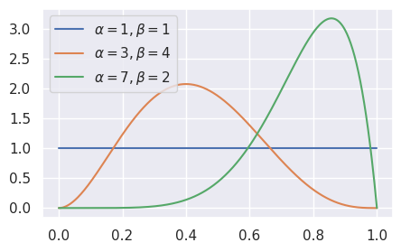
We can see that different values of the parameters lead to different shapes for the beta distribution. In particular, when \(\alpha\) is larger than \(\beta\), we see that larger values of \(\theta\) are more likely, and vice versa. We can also see that Beta\((1, 1)\) is the same as the uniform distribution over \([0, 1]\). Try experimenting with different values: what changes as \(\alpha\) and \(\beta\) get larger?
Computing the posterior#
Now that we’ve set up the prior, we can compute the posterior distribution:
We can see that this is also a beta distribution, because it looks like \(\theta^{\text{stuff}-1}(1-\theta)^{\text{other stuff}-1}\). It has parameters \(\alpha + \sum_i x_i\) and \(\beta + \sum_i (1-x_i)\), so we can write the posterior as
By making this observation, we avoided having to compute the denominator \(p(x)\)!
This is because the beta distribution is the conjugate prior for the Bernoulli distribution. This means that whenever we have a Bernoulli likelihood, if we choose a prior from the beta family, then the posterior distribution will also be in the beta family.
Demo: prior and posterior Betas#
Let’s visualize some examples of prior and posterior beta distributions. We’ll use the plot_beta_prior_and_posterior function, which takes in the parameters of the prior (\(a\) and \(b\)) as well as the number of positive and negative observations (\(k\) and \(n-k\)), and shows the prior and posterior distributions for \(\theta\) on the same graph.
We’ll start with Microwave A, which had 3 positive reviews and 0 negative reviews. For now, we’ll just explore a few different choices and look at the outcomes. Later, we’ll discuss which choice of prior could be a better fit for this particular problem.
First, what happens if we use a \(\mathrm{Beta}(1, 1)\) prior? We saw earlier that this is the same as a uniform prior. Intuitively, this prior represents the belief that before observing any reviews, all values of \(\theta\) (between 0 and 1) should be equally likely.
# Plots a beta posterior resulting from a Beta(1, 1) prior (the first two arguments)
# and 3 positive observations and 0 negative observations (the second two arguments)
plot_beta_prior_and_posterior(1, 1, 3, 0)
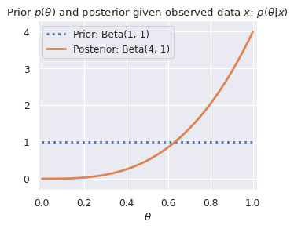
Looking at the orange density, it assigns higher probability to larger values of \(\theta\). What if we use a different prior? We’ll try a Beta\((1, 5)\) prior, which represents the belief that before we observe any reviews, smaller values of \(\theta\) are more likely than larger ones (i.e., we are skeptical of product quality before we see any reviews).
plot_beta_prior_and_posterior(1, 5, 3, 0)
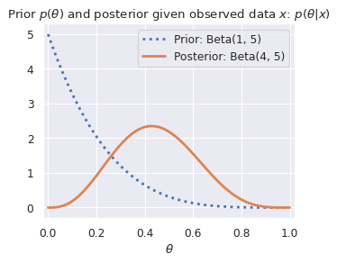
Changing the prior distribution has dramatically changed the posterior distribution. What if we had used an even more “skeptical” prior?
plot_beta_prior_and_posterior(1, 10, 3, 0)
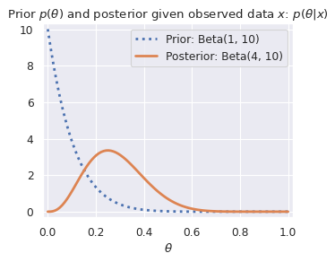
We can see that for microwave A, our choice of prior has a significant effect on the posterior distribution. What about for microwave B?
plot_beta_prior_and_posterior(1, 1, 19, 1)
plot_beta_prior_and_posterior(1, 5, 19, 1)
plot_beta_prior_and_posterior(1, 10, 19, 1)
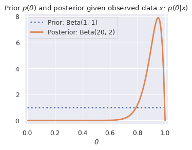
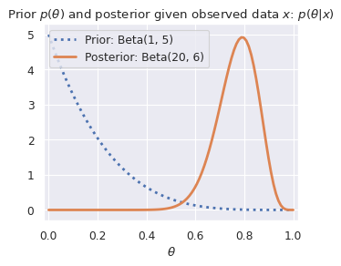
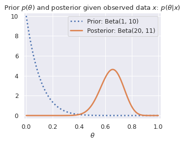
Here, the prior still has an effect on the posterior distribution: the more “skeptical” the prior is, the more the posterior shifts to the left. But, the effect of the prior is much smaller than it was for Microwave A. This illustrates a general trend in Bayesian inference: with less data, the prior usually has a stronger effect on the posterior.
Point estimates#
Once we have a posterior distribution, we will often want to answer the question: how do we use the distribution to get a single estimate for \(\theta\)? This single number is typically called a point estimate.
We’ll start with two answers for question 1: the Maximum a Posteriori (MAP) estimate and the Minimum/Least Mean Squared Error (MMSE/LMSE) Estimate.
The MAP estimate is the estimate that maximizes the posterior distribution. Remember that the posterior distribution represents our belief about the unknown parameter \(\theta\). Intuitively, the MAP estimate is the \(\theta\) value that is most likely according to that belief. For a Beta\((\alpha, \beta)\) distribution, we can look up the maximum value (mode) of the distribution to find that it’s \(\frac{\alpha-1}{\alpha+\beta-2}\).
Optional exercise: derive the mode of the beta distribution. Hint: instead of maximizing the Beta density with respect to \(\theta\), try taking the log first, just like we did before.
The LMSE estimate is simply the mean of the posterior distribution. It has this name because we can show that the mean of the posterior distribution minimizes the mean squared error:
The mean of a Beta\((\alpha, \beta)\)-distributed random variable is \(\frac{\alpha}{\alpha+\beta}\).
Choosing the prior parameters#
Returning to our microwave example, we can see that our choice of prior encodes our beliefs about products and reviews.
For example, if we think that most products are good until proven otherwise by the review data, then we could choose a more “optimistic” prior, such as Beta\((5, 1)\), which favors (assigns higher probability to) larger values of \(\theta\). In this case:
The posterior for the quality of microwave A is Beta\((8, 1)\), and the MAP estimate is 1.
The posterior for the quality of microwave B is Beta\((24, 2)\), and the MAP estimate is 0.96. Under this prior, microwave A looks better.
But, if we believe that most products are bad until proven otherwise by the review data, we may choose a Beta\((1, 5)\) prior, which favors smaller values of \(\theta\). In this case:
The posterior for the quality of microwave A is Beta\((4, 5)\): if we compute the MAP estimate, we get 0.43.
The posterior for the quality of microwave B is Beta\((20, 6)\), and the MAP estimate is 0.79. So, under this prior, microwave B looks better.
From this, we can take away that our choice of prior can often have a significant effect on our results. So, it’s important to choose priors that capture your assumptions and belief about the world, and to be explicit about communicating those assumptions with others when sharing your results.
Another attempt: a non-conjugate prior#
To see why the conjugate prior is so helpful, let’s see what would have happened if we chose a different prior.
Suppose we instead choose the prior \(p(\theta) = \frac{\pi}{2} \cos\left(\frac{\pi}{2} \theta\right), \, \theta \in [0, 1]\):
thetas = np.linspace(0, 1, 500)
f, ax = plt.subplots(1, 1, figsize=(5, 3), dpi=80)
ax.plot(thetas, np.pi/2 * np.cos(thetas * np.pi/2), label=r'$\pi/2\cos(\pi \theta/2)$')
ax.set_xlabel(r'$\theta$')
ax.set_ylabel(r'$p(\theta)$')
ax.legend();
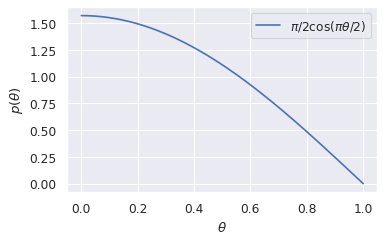
np.trapz(np.pi/2 * np.cos(thetas * np.pi/2), thetas)
/tmp/ipykernel_2317/2433367669.py:1: DeprecationWarning: `trapz` is deprecated. Use `trapezoid` instead, or one of the numerical integration functions in `scipy.integrate`.
np.trapz(np.pi/2 * np.cos(thetas * np.pi/2), thetas)
np.float64(0.9999991742330661)
We can try to compute the posterior just as we did before:
This distribution looks much more complicated: we can’t reduce it to a known distribution at all. Furthermore, there is no way to compute the normalizing constant in closed form: we’ll need to use numerical integration.
This makes it hard to reason about the distribution or use intuition about known distributions. It also means that if we want to compute quantities of interest about it (e.g., the mean/mode of the posterior for the LMSE/MAP estimates respectively), then we have to apply numerical integration.
A continuous example: estimating heights#
Suppose instead that now our parameter of interest \(\theta\) is the average height of a population, and our data \(x_1, \ldots, x_n\) are heights of individuals in a sample. A Bernoulli distribution no longer makes sense for these continuous data. There are many options we could choose, but for simplicity we’ll use a normal distribution (also known as the Gaussian distribution):
Frequentist estimation: MLE for the Gaussian likelihood#
We can go through a similar process as before to find the MLE for the Gaussian likelihood. Because the normalizing constant \(\frac{1}{\sigma\sqrt{2\pi}}\) doesn’t depend on \(\theta\) (and our goal is to optimize for \(\theta\), we’ll leave it out for now.
The log-likelihood is:
Differentiating with respect to \(\theta\) and solving is straightforward:
Once again, MLE has given us a very intuitive answer: the value for our parameter (population height average) that makes the data most likely is simply the mean of the sample heights. Note that our answer didn’t depend on \(\sigma\)!
Exercise: Suppose instead of the population average, we had been interested in the population standard deviation. What is the MLE for the population standard deviation?
Bayesian inference for heights#
Now suppose we instead take a Bayesian approach, and treat \(\theta\) as random. Just like before, we’re interested in the posterior distribution:
Since our parameter of interest is also a continuous variable, we could try using a normal distribution for the prior as well:
Note that the parameters of this prior distribution, \(\mu_0\) and \(\sigma_0^2\), are different from the parameters in the likelihood! This says that our parameter \(\theta\), the mean of the population, follows a normal distribution with some mean \(\mu_0\) and some variance \(\sigma_0^2\).
Although the algebra is a bit more involved, we can show that the normal distribution is the conjugate prior for the mean of a normal distribution. In other words, the posterior distribution for \(\theta\) is also normal.
It’s not quite as easy to read a quick interpretation from this as it was from the Beta posterior update. Let’s try to visualize some priors and posteriors and see if we can build intuition:
small_sample = [6*12, 6*12+1, 5*12+9]
larger_sample = [6*12, 6*12+1, 5*12+9] * 10
plot_gaussian_prior_and_posterior(5*12+6, 1, small_sample, 1)
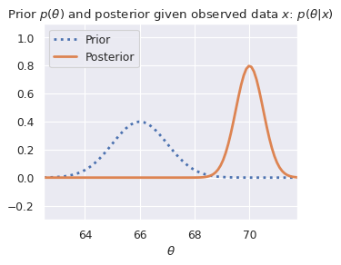
plot_gaussian_prior_and_posterior(5*12+6, 1, larger_sample, 1)
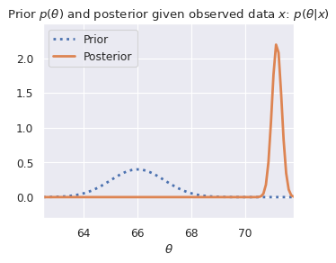
plot_gaussian_prior_and_posterior(6*12, 1, small_sample, 1)
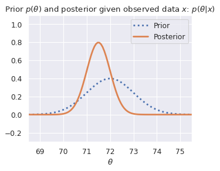
plot_gaussian_prior_and_posterior(6*12, 1, larger_sample, 1)
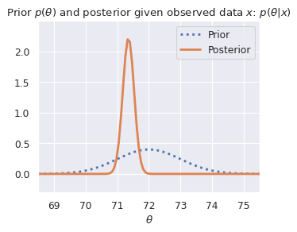
Just as before, we can observe that the prior has a stronger effect when we have less data. We can also see that the posterior distribution becomes narrower as the amount of data increases. This is another general fact: the more data we observe, the narrower our posterior distribution becomes.
Optional Exercise: now that you’ve seen the effect of the prior parameters in a normal prior + normal likelihood model, give an intuitive explanation of how the parameters interact in the posterior distribution above for \(p(\theta | x_1, \ldots x_n)\).